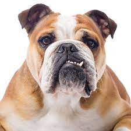
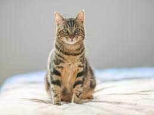

ONG - AYUDA A UN PELUDO
desde 1955 que trabaja por la educación, rescate y rehabilitación de animales en situación de vulnerabilidad, para que sean adoptados por dueños aptos.
Nuestros integrantes
- Andres Ruiz - Director
- Karla Valladares - recepcionista
- Benjamin Perez- administrador
Nuestras secciones de ayuda

perros

gatos